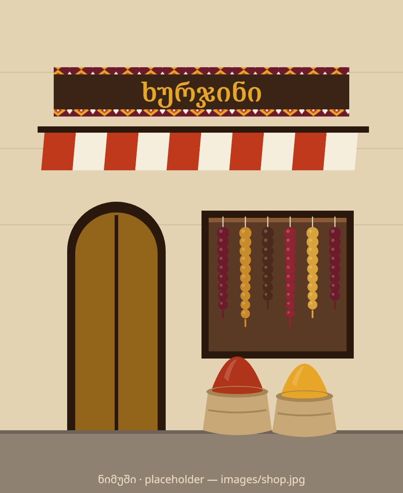

A family shop in Old Tbilisi
Khurjini is small and cosy, and it is run by a married couple. They love to talk about spices, help you choose, and let you taste before you buy.
Everything on the shelves is natural and homemade, sold at local prices. Travellers find the shop on their walk through the old town, and local hosts send their guests here.
A khurjini is the woven saddlebag Georgian travellers carried their goods in. Ours is full of Georgia.